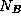

![[DBPP]](pictures//asm_color_tiny.gif)


![[Search]](pictures//search_motif.gif)
In Chapter 4, we distinguished three general forms of composition that can be used for the modular construction of parallel programs: sequential, parallel, and concurrent. Recall that in sequential composition, two program components execute in sequence on the same set of processors. In parallel composition, two program components execute concurrently on disjoint sets of processors. In concurrent composition, two program components execute on potentially nondisjoint sets of processors.
MPI supports modular programming via its communicator mechanism, which provides the information hiding needed when building modular programs, by allowing the specification of program components that encapsulate internal communication operations and provide a local name space for processes. In this section, we show how communicators can be used to implement various forms of sequential and parallel composition. MPI's MPMD programming model means that the full generality of concurrent composition is not generally available.
An MPI communication operation always specifies a communicator. This identifies the process group that is engaged in the communication operation and the context in which the communication occurs. As we shall see, process groups allow a subset of processes to communicate among themselves using local process identifiers and to perform collective communication operations without involving other processes. The context forms part of the envelope associated with a message. A receive operation can receive a message only if the message was sent in the same context. Hence, if two routines use different contexts for their internal communication, there can be no danger of their communications being confused.
In preceding sections, all communication operations have used the default communicator MPI_COMM_WORLD, which incorporates all processes involved in an MPI computation and defines a default context. We now describe four functions that allow communicators to be used in more flexible ways. These functions, and their roles in modular design, are as follows.
The four functions are summarized in Figure 8.7; their arguments and the ways they are called are described next.
Figure 8.7: MPI communicator functions.
Figure 8.8: Errors can occur in a sequential composition of two
parallel program components (e.g., an application program and a
parallel library) if the two components use the same message tags.
The figure on the left shows how this can occur. Each of the four
vertical lines represents a single thread of control (process) in an
SPMD program. All call an SPMD library, which are represented by the
boxes. One process finishes sooner than the others, and a message
that this process generates during subsequent computation (the dashed
arrow) is intercepted by the library. The figure on the right shows
how this problem is avoided
by using contexts: the library communicates using a distinct tag space,
which cannot be penetrated by other
messages.
As discussed in Section 8.2.2, message tags provide a mechanism for distinguishing between messages used for different purposes. However, they do not provide a sufficient basis for modular design. For example, consider an application that calls a library routine implementing (for example) an array transpose operation. It is important to ensure that the message tags used in the library are distinct from those used in the rest of the application (Figure 8.8). Yet the user of a library routine may not know the tags the library uses; indeed, tag values may be computed on the fly.
Communicators provide a solution to this problem. A call of the form MPI_COMM_DUP(comm, newcomm)
creates a new communicator newcomm comprising the same processes as comm but with a new context. This new communicator can be passed as an argument to the library routine, as in the following code, which calls transpose to transpose an array A.
integer comm, newcomm, ierr ! Handles are integers...
call MPI_COMM_DUP(comm, newcomm, ierr) ! Create new context
call transpose(newcomm, A) ! Pass to library
call MPI_COMM_FREE(newcomm, ierr) ! Free new context
The transpose routine itself will be defined to use the communicator newcomm in all communication operations, thereby ensuring that communications performed within this routine cannot be confused with communications performed outside.
Figure 8.9: Different views of parallel composition. On the left
is the task-parallel view, in which new tasks are created
dynamically to execute two different program components. Four tasks
are created: two perform one computation (dark shading) and two
another (light shading). On the right is the MPMD view. Here,
a fixed set of processes (represented by vertical arrows) change
character, for example, by calling different
subroutines.
Recall that we use the term parallel composition to denote the parallel execution of two or more program components on disjoint sets of processors (Section 4.2). One approach to the implementation of parallel composition is to create tasks dynamically and to place newly created tasks on different processors. This task-parallel approach is taken in CC++ and Fortran M, for example. In MPMD programs, parallel composition is implemented differently. As illustrated in Figure 8.9, available processes are partitioned into disjoint sets, with each set executing the appropriate program. This partitioning is achieved by using the function MPI_COMM_SPLIT. A call of the form
MPI_COMM_SPLIT(comm, color, key, newcomm)
creates one or more new communicators. This function is a collective communication operation, meaning that it must be executed by each process in the process group associated with comm. A new communicator is created for each unique value of color other than the defined constant MPI_UNDEFINED. Each new communicator comprises those processes that specified its value of color in the MPI_COMM_SPLIT call. These processes are assigned identifiers within the new communicator starting from zero, with order determined by the value of key or, in the event of ties, by the identifier in the old communicator. Thus, a call of the form MPI_COMM_SPLIT(comm, 0, 0, newcomm)
in which all processes specify the same color and key, is equivalent to a call MPI_COMM_DUP(comm, newcomm)
That is, both calls create a new communicator containing all the processes in the old communicator comm. In contrast, the following code creates three new communicators if comm contains at least three processes.
MPI_Comm comm, newcomm;int myid, color;
MPI_Comm_rank(comm, &myid);
color = myid%3;
MPI_Comm_split(comm, color, myid, &newcomm);
For example, if comm contains eight processes, then processes 0, 3, and 6 form a new communicator of size three, as do processes 1, 4, and 7, while processes 2 and 5 form a new communicator of size two (Figure 8.10).
Figure: Using MPI_COMM_SPLIT to form new communicators.
The first communicator is a group of eight processes. Setting color to
myid%3 and calling MPI_COMM_SPLIT(comm, color, myid,
newcomm) split this into three disjoint process
groups.
As a final example, the following code fragment creates a new communicator ( newcomm) containing at most eight processes. Processes with identifiers greater than eight in communicator comm call MPI_COMM_SPLIT with newid=MPI_UNDEFINED and hence are not part of the new communicator.
MPI_Comm comm, newcomm;int myid, color;
MPI_Comm_rank(comm, &myid);
if (myid < 8) /* Select first 8 processes */
color = 1;
else /* Others are not in group */
color = MPI_UNDEFINED;
MPI_Comm_split(comm, color, myid, &newcomm);
A communicator returned by MPI_COMM_SPLIT can be used to communicate within a group of processes. Hence, it is called an intracommunicator. (The default communicator, MPI_COMM_WORLD, is an intracommunicator.) It is also possible to create an intercommunicator that can be used to communicate between process groups. An intercommunicator that connects two groups A and B containing and  processes, respectively, allows processes in group A to communicate with processes 0.. in group B by using MPI send and receive calls (collective operations are not supported). Similarly, processes in group B can communicate with processes 0.. in group A .
An intercommunicator is created by a collective call executed in the two groups that are to be connected. In making this call, the processes in the two groups must each supply a local intracommunicator that identifies the processes involved in their group. They must also agree on the identifier of a ``leader'' process in each group and a parent communicator that contains all the processes in both groups, via which the connection can be established. The default communicator MPI_COMM_WORLD can always be used for this purpose. The collective call has the general form
MPI_INTERCOMM_CREATE(comm, local_leader, peercomm,
remote_leader, tag, intercomm)
where comm is an intracommunicator in the local group and
local_leader is the identifier of the nominated leader process
within this group. (It does not matter which process is chosen as the
leader; however, all participants in the collective operation must
nominate the same process.) The parent communicator is specified by
peercomm, while remote_leader is the identifier of the
other group's leader process within the parent communicator.
The two other arguments are (1) a ``safe'' tag that the two groups'
leader processes can use to communicate within the parent
communicator's context without confusion with other communications and
(2) the new intercommunicator intercomm.
Program 8.7 illustrates these ideas. It first uses MPI_COMM_SPLIT to split available processes into two disjoint groups. Even-numbered processes are in one group; odd-numbered processes are in a second. Calls to MPI_COMM_RANK are used to determine the values of the variables myid and newid, which represent each process's identifier in the original communicator and the appropriate new communicator, respectively. In this example, newid=myid/2. Then, the MPI_INTERCOMM_CREATE call defines an intercommunicator that links the two groups (Figure 8.11). Process 0 within each group are selected as the two leaders; these processes correspond to processes 0 and 1 within the original group, respectively. Once the intercommunicator is created, each process in the first group sends a message to the corresponding process in the second group. Finally, the new communicators created by the program are deleted.
Figure: Establishing an intercommunicator between two process
groups. At the top is an original group of eight processes; this is
MPI_COMM_WORLD. An MPI_COMM_SPLIT call creates two
process groups, each containing four processes. Then, an
MPI_INTERCOMM_CREATE call creates an intercommunicator between the
two groups.
© Copyright 1995 by Ian Foster